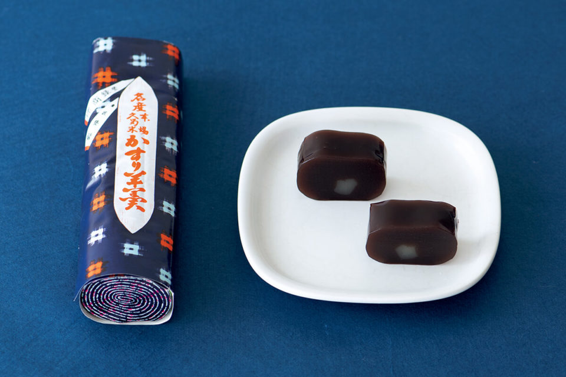
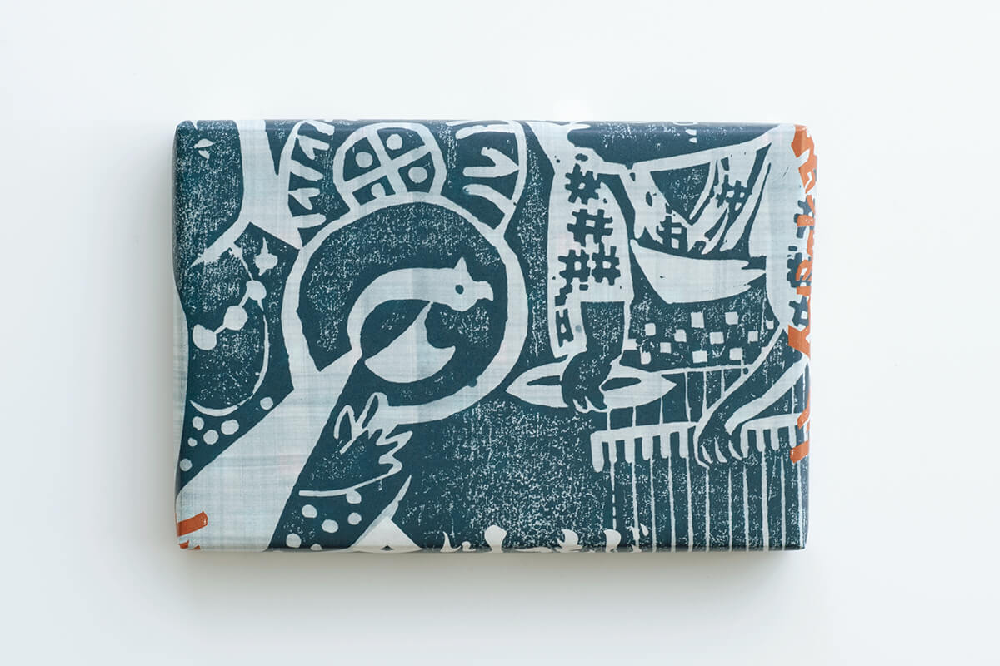
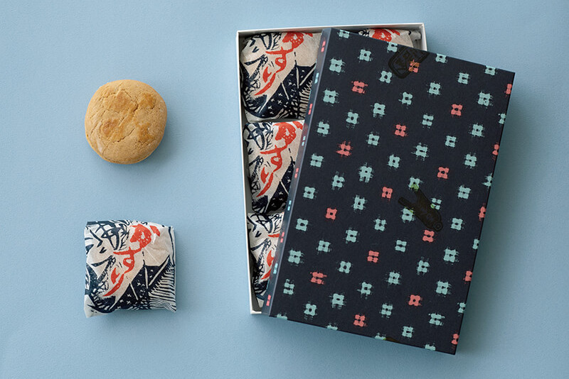
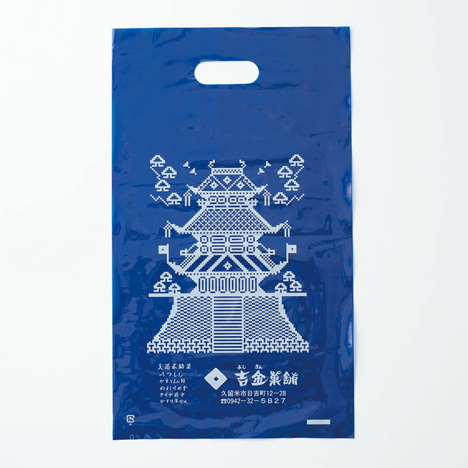
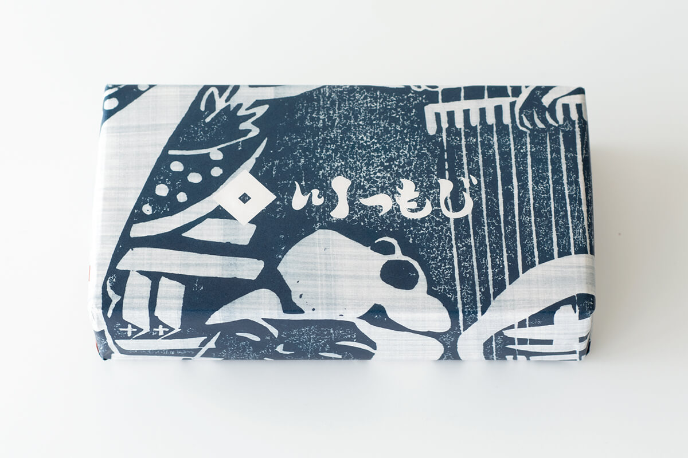
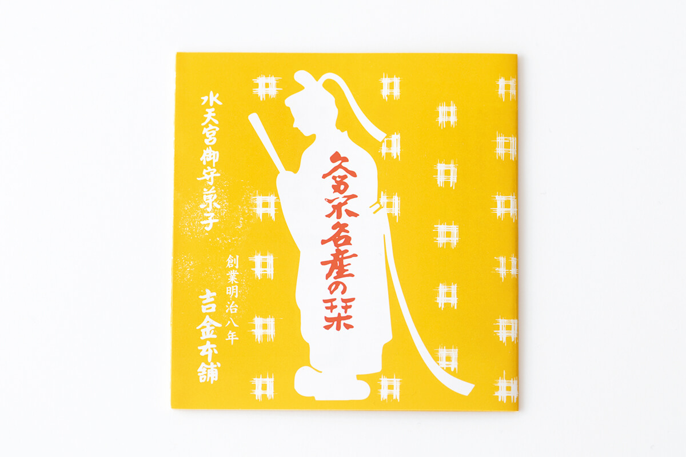
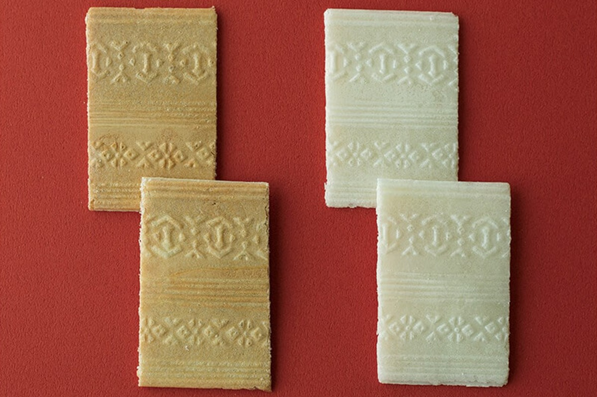
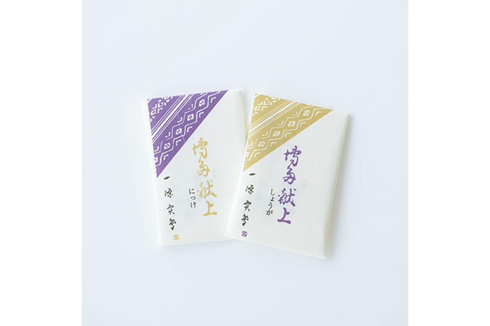
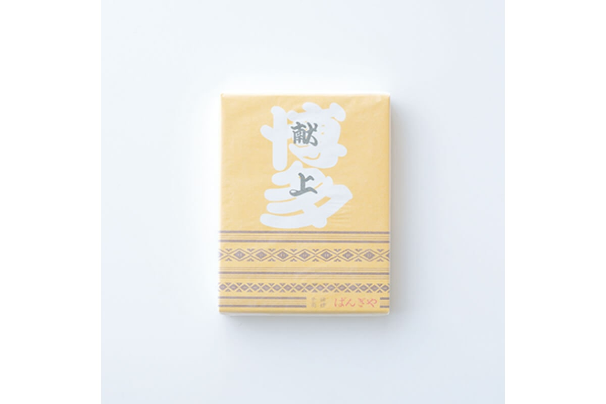

Префектура Фукуока · Курумэ и Хаката · сладости
Сладости в узорах ткани: ёкан и мандзю из Курумэ и монака из Хакаты

В префектуре Фукуока ткут две знаменитые ткани: хлопковую курумэ-гасури и шёлковую хаката-ори. Обе давно перебрались с одежды на сладости, и по коробке с ёканом или монакой здесь можно изучать текстильные узоры.
Ткани
Две ткани, которые хвалил Мунэёси Янаги
Связь народного ремесла и сладостей много лет прослеживает японская исследовательница кондитерского дела. Её маршрут по Фукуоке ведёт в две старые лавки, и обе начинаются с ткани.
В «Ремесле Японии» Мунэёси Янаги отдельно говорит о тканях Фукуоки. О хаката-ори он пишет так: «Это ткань с яркими особенностями, её знает каждый, и, к счастью, её ткут до сих пор. Из неё делают в основном пояса, отсюда даже название „пояс хаката“. Это плотное и жёсткое шёлковое плетение со своеобразным узором. Работа поистине достойная».
Сразу за этим он добавляет: «Среди тканей Кюсю есть ещё одна, о которой никак нельзя забыть. Это „курумэ-гасури“, и, наверное, в любой провинции Японии из неё шили кимоно». Хлопковая курумэ-гасури с узором из размытых белых пятен на синем фоне в то время была повседневной одеждой японцев по всей стране. Для Янаги это и было народное ремесло в чистом виде.
Курумэ
«Ёсикин касихо»: лавка, которая печёт свой город
Курумэ, город на юге префектуры, родина курумэ-гасури. Здесь работает кондитерская «Ёсикин касихо», и почти каждая её сладость связана с местной историей или ремеслом.
В Курумэ стоит главное из всех святилищ Суйтэнгу в Японии. Знак санскритского письма с его охранного амулета лавка оттискивает на тонкой хрустящей вафле из рисовой муки, и получается изящная сладость «Ицумодзи».

Но главные сладости лавки посвящены ткани. Первая из них «Касури-мандзю», булочка с узором курумэ-гасури. Вкус у неё наполовину японский, наполовину европейский. Пышное тесто замешивают на сливочном масле, мёде и яйцах, а внутрь кладут слой мармелада с лёгкой кислинкой. Сочетание получается очень удачным.


Упаковка у «Касури-мандзю» тоже вся из мотивов гасури, и выглядит коробка очень мило.
Вторая сладость «Касури-ёкан». Это брусок ёкана из красной фасоли адзуки со свежим вкусом бобов, он чисто режется и в меру сладок. К чаю лучше не придумать. Когда брусок нарезают, на тёмной пасте проступают светлые пятнышки «юкинко», «снежинок», одного из классических узоров курумэ-гасури.

Обёртка подражает рулону ткани с узором «игэта», а на торце нарисована спираль, как у свёрнутого отреза. Трудно представить что-то симпатичнее.

«Ёсикин касихо»
- Адрес
- префектура Фукуока, Курумэ, Хиёси-мати, 12-28
- Телефон
- +81 942-32-5827
- Часы работы
- 8:30–19:00
- Выходные
- воскресенье (нерегулярно)
Хаката
«Бангия»: монака с узором, подаренным сёгунам
Из Курумэ маршрут ведёт в Хакату, старый торговый район Фукуоки. Кондитерская «Хаката кэндзё хомпо Бангия» назвала свою главную сладость «Хаката кэндзё», «Подношение из Хакаты», и перенесла на неё узор хаката-ори.
Название напоминает именно об этом подарке Нагамасы Куроды. С тех пор узоры хаката-ори, которые шли в подношение, называют «кэндзё», «подносимые».

«Хаката кэндзё» это монака, сладость из хрустящих рисовых вафель. На ароматной вафле выдавлены рельефом узоры кэндзё: «докко» в виде ритуального буддийского жезла, «ханадзара» в виде цветочного блюда, ромбы «хиси» и полосы «кокодзима». Получается очень красиво.
Вафлю тонко расщепляют на две пластины и прослаивают густым рисовым сиропом. У поджаристой вафли сироп с корицей, у светлой с имбирём. Вкус у обеих глубокий и спокойный.


«Хаката кэндзё хомпо Бангия»
- Адрес
- префектура Фукуока, Фукуока, район Хаката, Амиба-мати, 5-18
- Телефон
- +81 92-291-5027
- Часы работы
- 9:00–21:00
- Выходные
- без выходных
Фото: Вакана Баба.